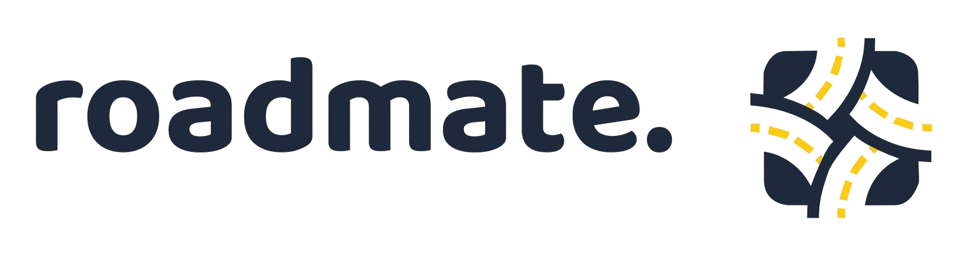
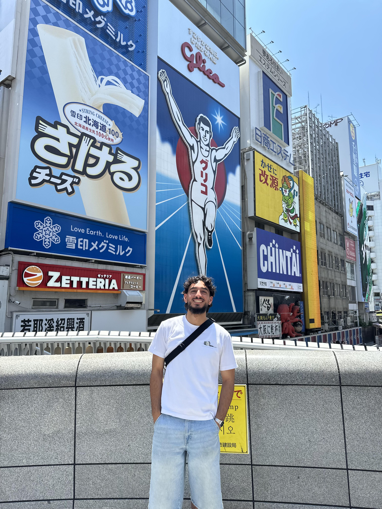
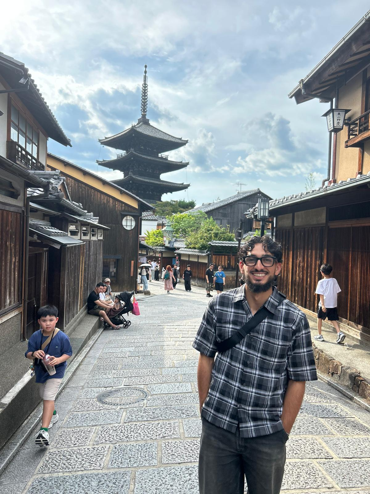
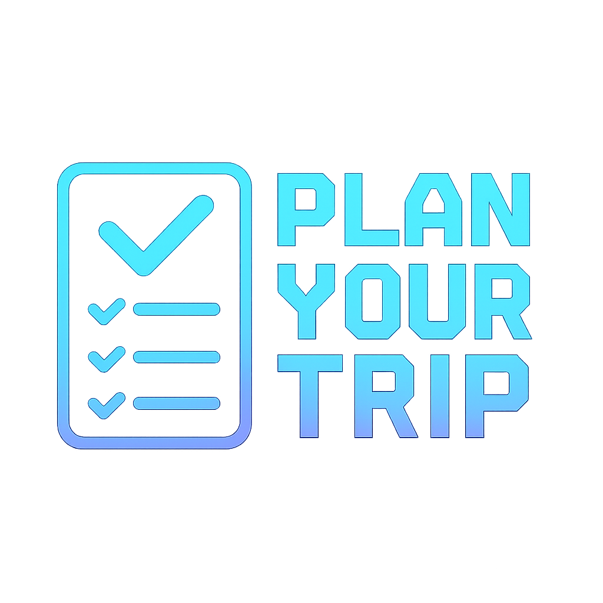

01
RoadMate
Een spraakgestuurde app die verkeersborden herkent en uitlegt tijdens het rijden.
Bekijk projectDIGITAL EXPERIENCE DESIGN
Ik ben Soulaimane Achkif, een derdejaarsstudent Digital Experience Design met een passie voor grafisch ontwerp, interactieve websites en creatieve digitale oplossingen.
Bekijk mijn werk

Hallo! Ik ben Soulaimane Achkif, een derdejaarsstudent Digital Experience Design. Ik ontwerp en ontwikkel digitale ervaringen waarbij creativiteit en technologie elkaar versterken.
Mijn passie ligt bij graphic design, front-end development en interactieve webapplicaties. Ik werk graag met HTML, CSS, JavaScript, React, PHP, Figma en Blender om ideeën om te zetten in gebruiksvriendelijke digitale producten.
Ik ben een creatief en sociaal persoon die graag samenwerkt. Wanneer ik aan een project begin, blijf ik doorgaan tot het resultaat volledig voldoet aan mijn verwachtingen. Ik geloof dat aandacht voor detail en een goede gebruikerservaring het verschil maken.
Laten we kennismaken
01
Een spraakgestuurde app die verkeersborden herkent en uitlegt tijdens het rijden.
Bekijk project
02
Een Japans geïnspireerde food kiosk, ontworpen voor het vak 3D Design.
Bekijk project
03
Een PHP-webapplicatie waarmee je een persoonlijke to-do lijst beheert.
Bekijk projectTijdens mijn opleiding werk ik dagelijks met verschillende design- en developmenttools. Hieronder zie je de technologieën waarmee ik websites, applicaties en digitale ervaringen ontwikkel.
Ben ik de juiste match voor uw team? Laten we samen werken !
soulaimaneachkif@gmail.com